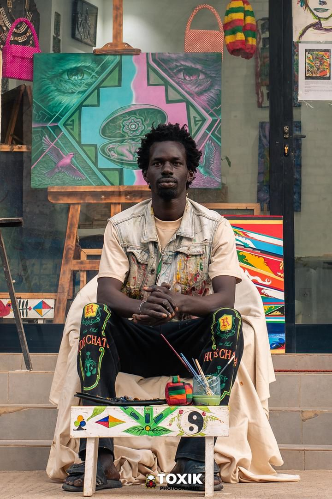

Artiste visuelle · Sénégal
Nalla Thioye
Basée à Ngor, Dakar. Son travail explore l'identité, la mémoire et les expressions culturelles africaines à travers la peinture, la gravure et des compositions symboliques.
2026 · Biennale de Venise
Participation sur le thème Fissures of Light — Diaspora : Dissonances in Fa Minor.

Note d'intention
« Mon travail est ancré dans le mouvement et la transmission culturelle. À travers des portraits et des symboles, j'exprime l'identité africaine, la mémoire collective et la force des héritages. »
Expositions & participations
2025
- Parcours de Dakar — 14e édition, Dakar
- Exposition à la Galerie Weurseuk
- Foire internationale Art Capital · Salon, Paris
2024
- Dak'Art Biennale OFF — Fondation Léopold Sédar Senghor & Fondazione Donà dalle Rose
- Exposition collective — Centre Culturel de Ngor
- Exposition internationale — Espagne
2023
- Parcours de Dakar — 12e édition
- Résidence — Loman Art House
2022
- Dak'Art OFF — La Symphonie des Arts
Contact
Ngor, Dakar — Sénégal. Pour une visite, une acquisition ou un projet d'exposition.